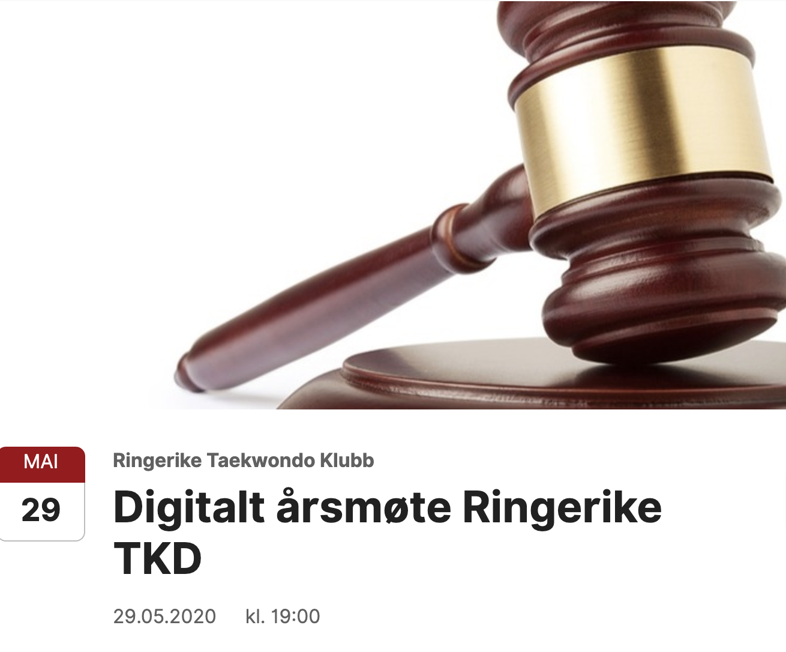

Arrangement
Digitalt årsmøte Ringerike TKD Klubb

Klubben gjennomfører i 2020 et digitalt årsmøte på grunn av den pågående pandemien. Selve møtet foregår på Teams. For å delta på møtet må du melde deg på via Isonen. Påmeldingsfrist 24.05.2020. Alle som er påmeldt til årsmøtet vil motta en link med invitasjon til det digitale årsmøtet per e-post 29.05.2020 klokken 1800. Møtet åpnes opp for deltagere fra 1845 og målet er å formelt starte klokken 1900.
Påmelding: Påmelding Digitalt årsmøte RTKD
Alle dokumenter til årsmøtet finner du her.
2020 Saksliste årsmøte Ringerike TKD
2019 Regnskap RTKD
2019 RTKD Regnskapsrapporter
2019 årsmelding Ringerike TKD
2020 budsjett RTKD
2020 Valgkomiteens innstilling
2020 Lov for Ringerike Taekwondo klubb